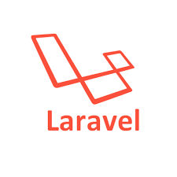

Yudai Tanabe
PORTFOLIO
就活のためというより自己紹介のためのページ
ABOUT
名前:Yudai Tanabe
所属:静岡大学大学院 総合科学技術研究科 情報学専攻 修士1年 情報生成学研究室
趣味/好きなこと:ゲーム(PC:VALORANT,Apex legends,Minecraft,etc...Swich:Splatoon2),野球,釣り,麻雀


INTERNSHIP
チームラボ株式会社
経験年数:2年~,研究・インターンシップ・講義・趣味
FW:Pandas,Numpy,Pytorch,scikit-learn
最も普段使いしている言語
SKILL

Python3
経験年数:2年~,研究・インターンシップ・講義・趣味
FW:Pandas,Numpy,Pytorch,scikit-learn
最も普段使いしている言語

Docker
経験年数:1年,研究・インターンシップ
既存のDockerfileを用いて環境構築することはできる
SQL
経験年数:1年,講義・インターンシップ
普段使いはしないため必要なときに必要な構文を調べて使用

HTML/CSS
経験年数:1年~,講義・インターンシップ
普段は使わない

PHP
経験年数:半年~,講義・インターンシップ
FW:Laravel
学部3年時のインターンシップで使用